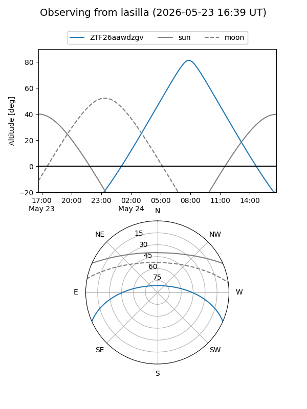
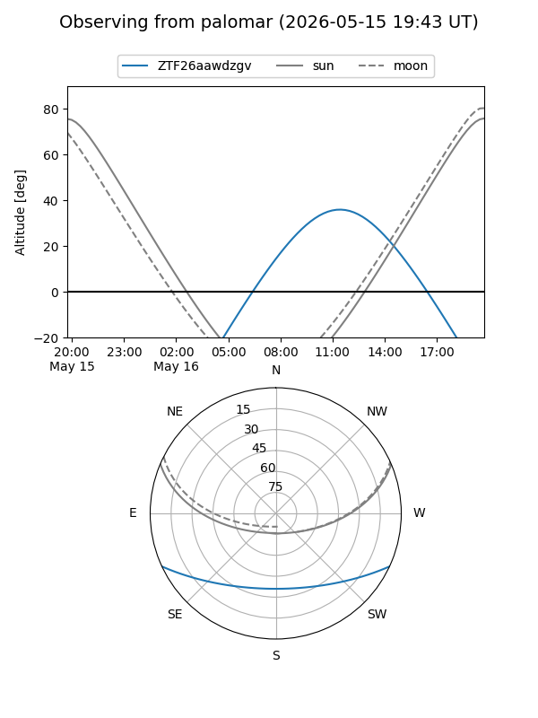
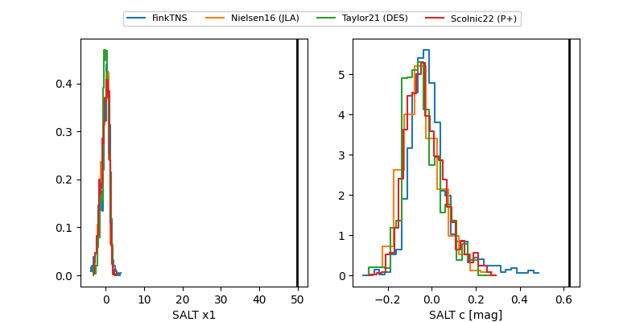

ZTF26aawdzgv
Target ZTF26aawdzgv at 2026-05-15 15:49
Aliases and brokers:
FINK: link
Lasair: link
ALeRCE: link
alt names
ZTF26aawdzgv (ztf,fink_ztf)
Coordinates:
equatorial (ra, dec) = 288.3215,-20.71859
equatorial (HMS+DMS) = 19:13:17.17,-20:43:06.94
galactic (l, b) = (16.5189,-13.91921)
Flags:
Photometry:
last atlasc=19.16, ztfg=19.31, ztfr=18.70
1 atlasc, 3 ztfg, 1 ztfr detections
Lightcurve
Visibility


Additional plots
